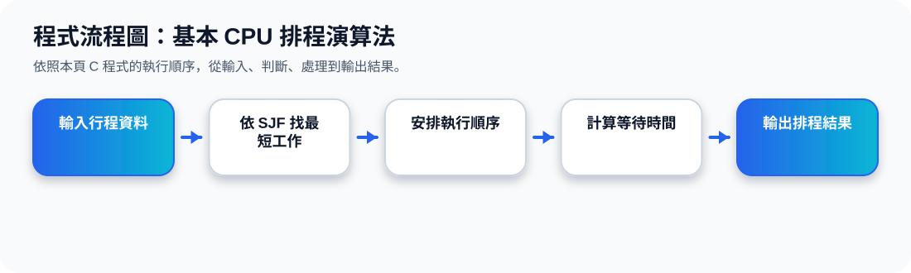

二、本主題總覽：四種基本排程演算法
核心觀念 CPU 排程演算法的目的，是從 ready queue 中選出下一個使用 CPU 的 process。不同演算法會影響 waiting time、turnaround time、response time 與公平性。
FCFS
先到先服務，簡單但可能讓短工作等很久。
SJF
最短 CPU burst 優先，可降低平均等待時間。
Priority
依照優先權選擇 process，可能造成 starvation。
Round-Robin
每個 process 輪流取得一小段 CPU 時間。
三、FCFS：First-Come, First-Served
FCFS 的規則很直覺：誰先要求 CPU，誰就先被服務。它通常用 FIFO queue 管理 ready queue，而且屬於 nonpreemptive scheduling。
FCFS 甘特圖概念
如果 P1 很長，P2、P3 即使很短，也要等 P1 完成，平均等待時間可能很大。
FCFS 動畫
四、SJF：Shortest-Job-First
SJF 會選擇下一個 CPU burst 最短的 process 先執行。投影片中也提到，SJF 是 optimal，因為它能讓一組 process 的平均等待時間最小。
SJF 甘特圖概念
SJF 的困難在於：實際系統通常不知道下一個 CPU burst 的長度，所以需要用預測或估計。
SJF 動畫
五、Priority Scheduling：優先權排程
Priority Scheduling 會為每個 process 指定 priority number，CPU 分配給 priority 最高的 process。投影片中說明：smallest integer 代表 highest priority。
最高
最低
問題：Starvation
低優先權 process 可能一直等不到 CPU。
解法：Aging
等待越久，逐漸提高 process 的 priority。
Priority Scheduling 動畫
六、Round-Robin：輪流排程
Round-Robin 專門適合 time-sharing system。每個 process 會取得一小段 CPU time，稱為 time quantum。時間用完還沒完成，就被放回 ready queue 尾端。
Round-Robin 甘特圖概念
Round-Robin 動畫
七、Time Quantum 與 Context Switch
Time quantum 的大小會直接影響系統效能。投影片 58–59 說明：quantum 越小，context switch 次數可能越多；quantum 太大，Round-Robin 會越像 FCFS。
Quantum 太小
反應快，但 context switch 次數很多，overhead 高。
Quantum 適中
兼顧互動回應與切換成本，是較理想的設計。
Quantum 太大
切換少，但短工作可能等待較久，接近 FCFS。
Time Quantum 動畫
八、主題十五重點整理
FCFS 最簡單，但容易讓短工作等待；SJF 可降低平均等待時間，但需要知道或預測 CPU burst；Priority Scheduling 可依重要性安排，但要用 aging 避免 starvation；Round-Robin 適合互動系統，重點是選擇合適的 time quantum。
程式流程圖與流程講解
程式流程圖：基本 CPU 排程演算法

流程講解
可編輯 C 程式範例與線上編輯器
可編輯 C 程式：基本 CPU 排程演算法
這段程式依照上方流程圖設計，包含中文註解，適合貼到線上編輯器直接執行與修改。
程式題目完整教學內容
程式題目完整教學：基本 CPU 排程演算法
一、程式題目講解
用非搶先式 SJF 排程，依 burst time 從小到大決定執行順序。
核心觀念是短工作優先：burst time 較小的行程先執行，可降低平均等待時間。
二、完整程式碼
以下程式碼可直接複製到 C 語言線上編譯器執行。程式中已加入中文註解，說明主要變數、判斷流程與輸出目的。
#include <stdio.h>
/*
主題 15：基本 CPU 排程演算法
功能：示範非搶先式 SJF，依 burst time 由小到大排序。
*/
int main(void) {
int pid[] = {1, 2, 3, 4};
int burst[] = {8, 4, 9, 5};
int i, j;
for (i = 0; i < 4 - 1; i++) {
for (j = i + 1; j < 4; j++) {
if (burst[j] < burst[i]) {
int tb = burst[i]; burst[i] = burst[j]; burst[j] = tb;
int tp = pid[i]; pid[i] = pid[j]; pid[j] = tp;
}
}
}
printf("SJF 執行順序：");
for (i = 0; i < 4; i++) printf("P%d ", pid[i]);
printf("\n");
return 0;
}三、程式執行結果
SJF 執行順序：P2 P4 P1 P3結果說明：核心觀念是短工作優先：burst time 較小的行程先執行，可降低平均等待時間。 程式依照設定的資料與控制流程逐步輸出，因此可以從結果看到每個步驟的執行順序與狀態變化。
四、程式流程圖與流程圖說明
本頁上方已提供對應的程式流程圖，圖中以「開始、資料設定、條件判斷、重複處理、輸出結果、結束」呈現程式執行順序。
程式用雙層 for 比較 burst time，若後面行程較短就交換 burst 與 pid，最後輸出排序後的行程順序。
五、重要函數與語法說明
雙層 for 用來排序；if 判斷是否需要交換；暫存變數 tb、tp 用來交換陣列內容。
六、整體說明
本題的學習重點是把作業系統概念轉成可觀察的 C 程式流程。學生應先理解題目概念，再對照程式碼、流程圖與執行結果，掌握變數設定、條件判斷、迴圈處理與輸出結果之間的關係。